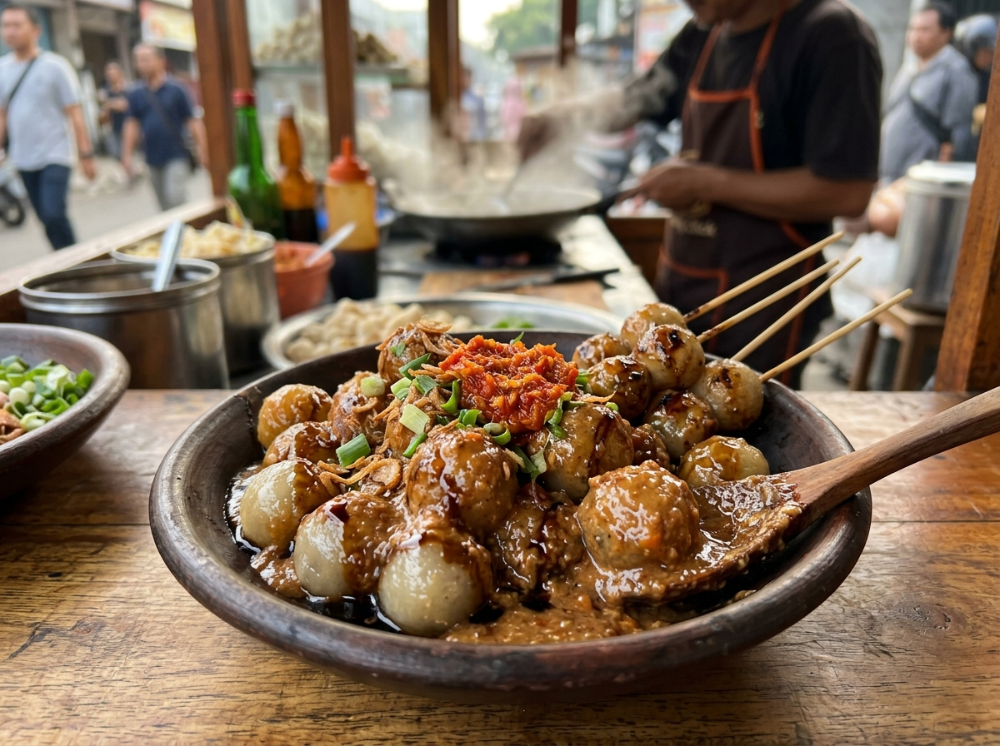
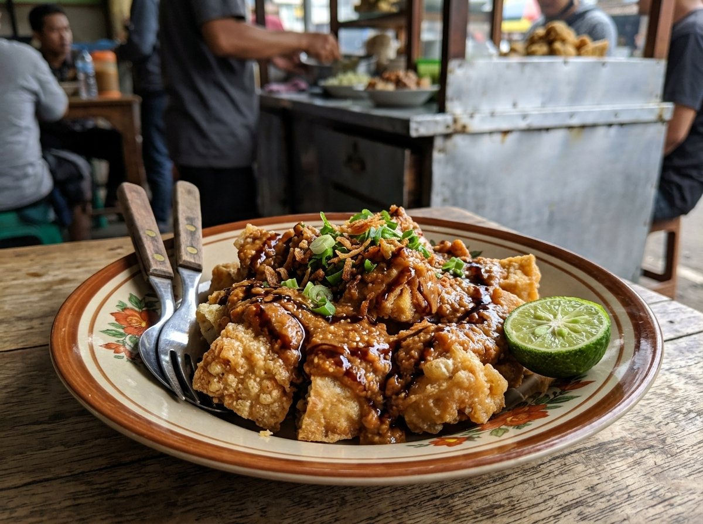
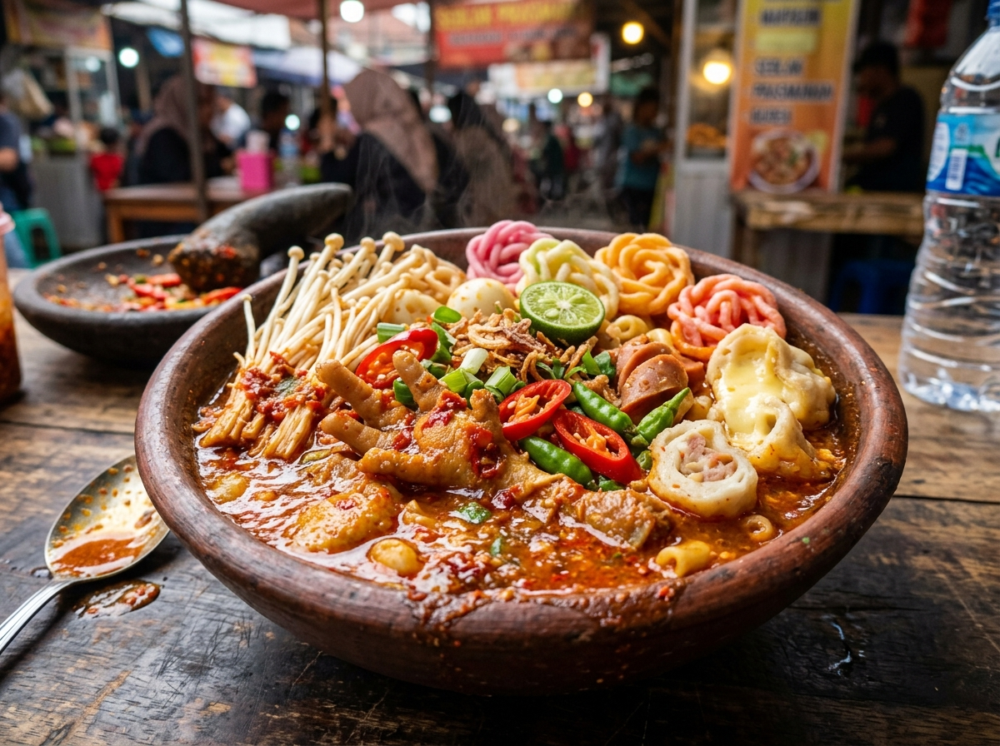
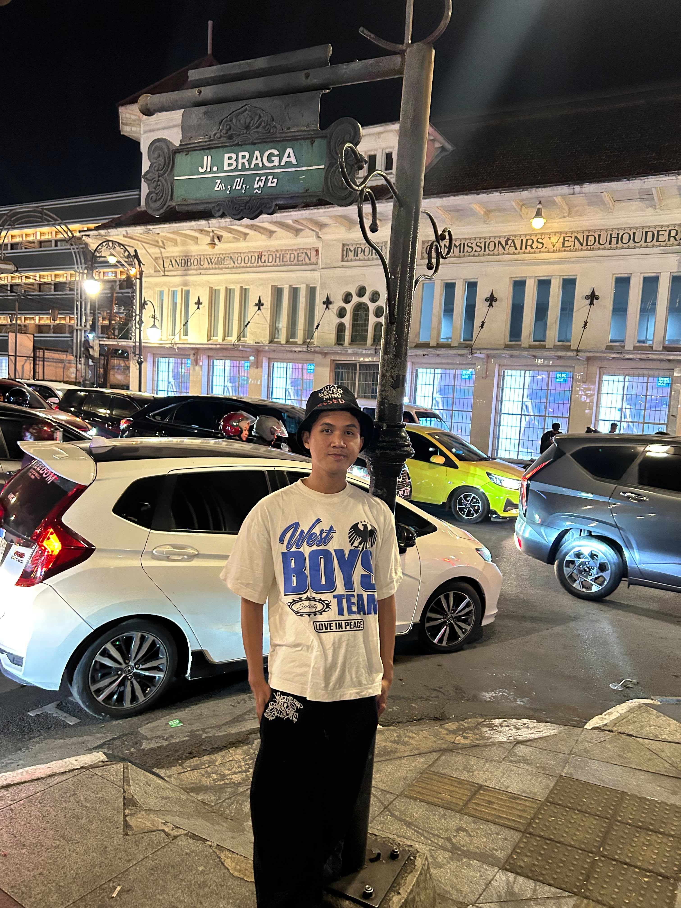
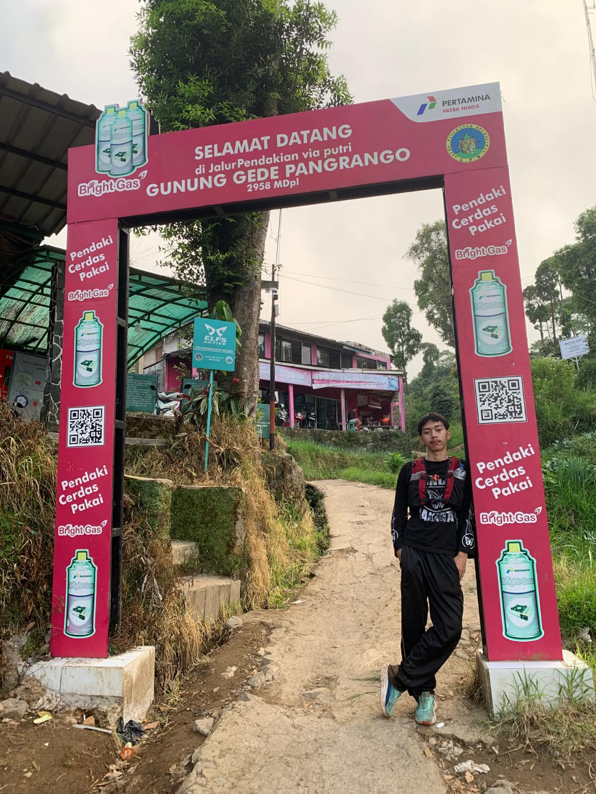

Daftar Review & Rekomendasi Jajanan
Menampilkan 30 spot jajanan terbaik
Memuat ulasan jajanan...
Temukan kedai dan gerobak legendaris dengan bumbu kacang kental, kuah seblak medok pedas nampol, serta tekstur kenyal sempurna lewat peta interaktif & ulasan mendalam komunitas.
Menampilkan 30 spot jajanan terbaik
Memuat ulasan jajanan...
Tiga tempat paling legendaris dengan cita rasa tiada tanding yang wajib masuk daftar kunjungan kalian!

Tekstur kenyal pas tidak alot, digoreng dengan baluran telur renyah dan disiram saus bumbu kacang pedas manis yang gurih melimpah.

Dibuat dari daging ikan tenggiri asli yang wangi dan tebal, kulit tahu renyah keemasan, dipadu sambal kacang kental dan kecap manis premium.

Aroma kencur segar dan kuah rempah merah merona yang medok banget! Pilihan lebih dari 30 topping mulai dari kerupuk mawar, enoki, ceker, hingga suki.
Proyek website ulasan & peta interaktif jajanan kaki lima ini disusun dan dikembangkan dengan penuh semangat kuliner oleh tim kami:
Memimpin koordinasi tim, serta merancang estetika antarmuka website bertema kuliner kaki lima.
Mengumpulkan data kedai legendaris, menyusun ulasan rasa objektif, serta memvalidasi resep bumbu dan level pedas.
Membangun struktur HTML, styling CSS modern responsif.
Menguji responsivitas website pada ragam perangkat, memeriksa akurasi informasi harga, serta kriteria rating makanan.

Memetakan koordinat titik kuliner, serta merancang sinkronisasi interaktif peta dan kartu ulasan.

Mengimplementasikan fitur penyimpanan ulasan lokaL, menyusun dokumentasi teknis, dan materi presentasi tugas.